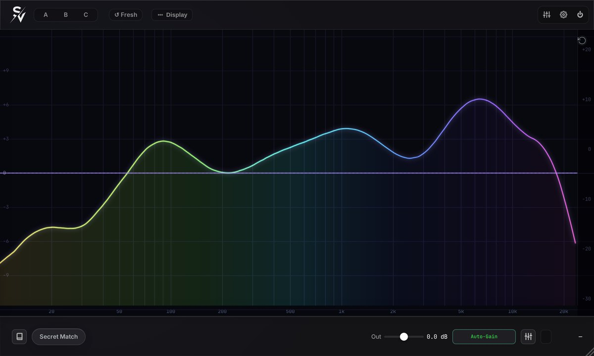

Match any reference. Keep your sound. A match EQ with 26 smart bands, your own parametric bands, saturation and fair loudness - in one calm window.
No risk: test it in your own sessions - not convinced within 14 days? 100 % of your money back, no questions asked. One license, two computers. Secure checkout by Paddle, our reseller - prices incl. VAT where it applies.

Pick a reference, play your track, press one button. 26 bands move your tone towards the reference - with Strength and Smooth for taste.
Click in the graph to add a bell, shelf or cut. Drag for frequency and gain, scroll for width. On top of the match or on its own.
Three sound slots. Auto-Gain keeps them equally loud, so you judge the tone, not the volume.
Drop an audio file, capture any sound live, keep your favourite references one click away.
Gentle drive before or after the EQ, a clean output stage and loudness readout.
Rest the mouse on anything to see what it does. A short welcome tour on first launch.
No. After buying you get an email with your license key and the download links. Open the plugin, click Activate, paste the key. Done.
Yes - without risk. Buy it, test it in peace in your own songs, and if it is not for you, you get 100 % of your money back within 14 days. No reason needed, no restrictions.
Enter your email on the lost key page and we send it again.
In the plugin: gear icon → License → Deactivate this computer. Then activate on the new one.
Yes. The plugin checks the license about once a month and keeps working for weeks without internet. Offline activation is available on request.
Yes, within 14 days - see the refund policy.